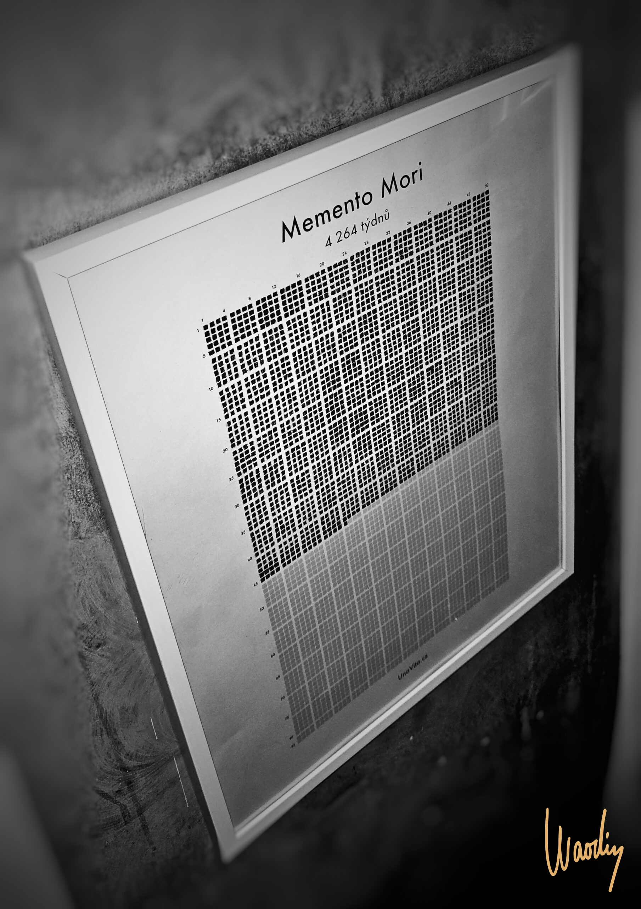
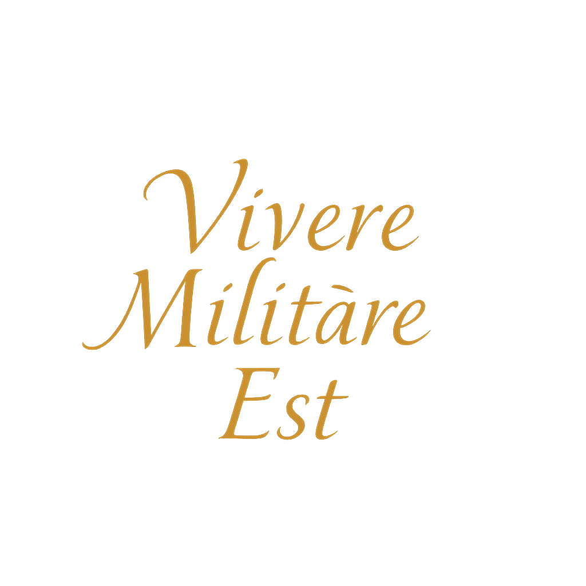

MEMENTO MORI
„Vše, co má začátek, má i konec.“

Čas, který máš za sebou:
Každý den je mi jasnější, že běží čas.
Není to myšlenka, která mě děsí — je to myšlenka, která mě probouzí.
MEMENTO MORI
Pamatuj, že zemřeš. Tahle slova mi nešeptá smrt do ucha, ale život. Ne jako výhružka, ale jako výzva.
Co uděláš s tím, co ti zbývá?
Narodil jsem se 3. března 1980. Dnes už dobře vím, že mládí je období, kdy si myslíme, že máme času dost. Ale to je iluze. Každý den od té doby je krokem blíž k devadesátce, kterou beru jako symbolickou hranici. Možná se jí nedožiju. Možná ji přesáhnu. Ale číslo není důležité.
Důležitá je bdělost, se kterou k těm dnům přistupuju.
Život mě naučil, že věci, které se zdají být samozřejmé, mizí nejrychleji. Zdraví, čas, vztahy, příležitosti. Jsou jako ranní mlha. Chvíli tu jsou – a pak ne.
Nechci už jen přežívat, nechci utíkat před nudou scrollováním, nechci proměňovat své dny ve výplň mezi pracovními směnami.
Stoicismus mi pomohl dát mému životu rámec. Ne proto, že bych hledal odpovědi od starých filozofů, ale protože jsem hledal způsob, jak být silný ve slabých chvílích. Jak se nezhroutit, když věci nejdou podle plánu. Jak být klidný v chaosu. A hlavně – jak si uvědomovat, že mám odpovědnost za to, co dělám dnes, protože zítra není jisté.
Každý den přináší výzvy. Unavený ráno, naštvaný v práci, nejistý večer. Ale právě v tom je krása.
Být mužem, který neuhýbá.
Který se postaví tomu, co přijde. Který se umí zklidnit, přijmout realitu takovou, jaká je – a i v ní najít prostor pro klid, smysl, růst.
Dává to, co dělám, smysl?
Byl jsem přítomný?
Byl jsem mužem, kterého bych respektoval?
A ne vždy odpověď zní „ano“. Ale právě tahle poctivost mě posouvá. Nechci žít falešně, nechci být obětí výmluv a prokrastinace.
Chci žít tak, aby mi nebylo líto, že ten den skončil.
Smrt je můj učitel. Neberu ji jako strašáka. Beru ji jako zrcadlo. Když se do něj dívám, ptám se sám sebe: Co tu po mně zůstane? Koho jsem inspiroval? Koho jsem podržel? Jaký příběh jsem žil? A je to příběh, který bych si sám rád přečetl?
Někdy mě přepadne úzkost. Jako by mě něco svíralo v hrudi, protože vím, že dny nejsou nekonečné. Ale právě proto si každý z nich cením víc.
Přítomnost se pro mě stala chrámem.
Neplýtvám jí. Nevyměňuju ji za toxické vztahy, za práci, která mě ničí, nebo za život, který není můj. Učím se říkat „ne“.
Učím se chránit svůj čas jako něco, co mi už nikdo nikdy nevrátí.
Memento mori není pesimistický koncept. Je to dar. Vede mě k pokoře, ke klidu, k odvaze. Pomáhá mi třídit, co má smysl a co ne. A když mě občas přepadne panika, že stárnu, že jsem něco nestihl, připomenu si, že každý den můžu začít znovu.
Že i když už za mnou něco je, pořád něco přede mnou může být – pokud budu bdělý, odhodlaný a vědomý.
Tenhle web, to co píšu, to co sdílím – to je moje
MEMENTO VIVERE
Pamatuj, že žiješ.
Memento mori je pro mě připomínka, že všechno, co je dočasné, může být krásné, hluboké a pravdivé. A že když to tak bude, smrt mě nezaskočí. Přijde jako starý známý. A já jí budu moct říct – byl jsem tady.
A žil jsem naplno.
💀 Co uděláš s tím, co ti zbývá?

